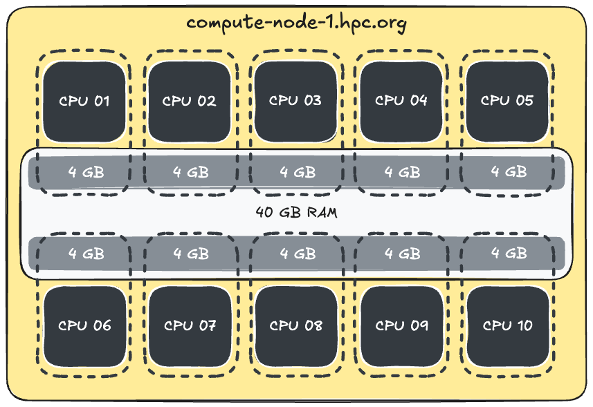
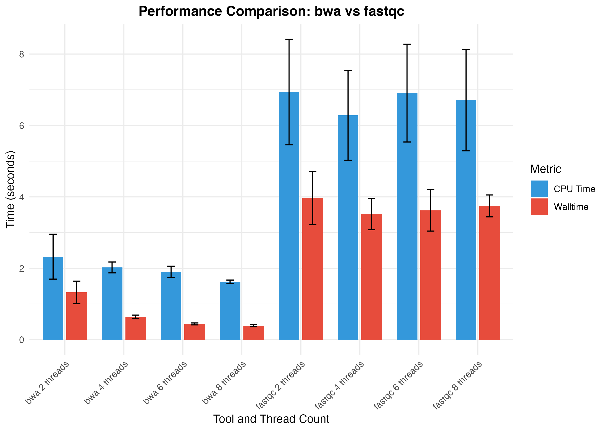

Assigning process resources
Learning objectives
- Analyse process-level resource usage from Nextflow trace data to determine appropriate resource requests
- Apply resource-aware configuration strategies
- Configure processes to correctly utilise allocated resources by passing values into process script blocks.
2.4.1 Resource efficiency on HPC
When running Nextflow workflows on HPC, the way you configure your process resources (cores, memory, walltime) can make a big difference to how efficiently your jobs run, how long they sit in the queue, and how many service units/resource hours the job costs.
A common assumption is that requesting fewer resources is safer, more considerate, or will result in less compute cost. In practice, this is often not the case. Jobs that are under-resourced may run for much longer than they need to, or fail partway through. This can waste time and also lead to wasted service units as the job requires resubmission.
In many cases, using more cores and memory for a shorter time can be more efficient and cost-effective. This principle applies broadly across HPC systems, but of course applies only to tools and analysis tasks which can make use of additional cores and memory. Once again, in bioinformatics, there is no substitute for reading the docs!
The scheduler also plays a role here. HPC schedulers are tuned to fit jobs into available space to maximise throughput and minimise idle cores on a node. If your job is "small and short" (i.e. fewer cores/memory for shorter time), it might slide into a gap on a partially subscribed compute node, but if it is "wide and tall" (i.e. more cores/memory for longer time) it may need to wait longer for available resources to become free. Some "wide and tall" bioinformatics tasks, such as read alignment, can be made "small and short" to take advantage of this feature of HPC, and we will apply this in Lesson 2.5.
Tip
You can think of job scheduling like finding a table at a busy café. If you’re alone or in a small group, it’s easier to get seated quickly, but if you camp out all day at a large table and only order a coffee, you’re not making good use of the space. The waiter would also preferentially give that table to the party of 8 queued behind you, requiring you to wait until peak time had passed if you insisted on that large table to yourself. The HPC scheduler works in a similar way: it tries to fill in available “seats” with jobs that fit neatly and will clear out efficiently.
In general, jobs that request just enough resources to run efficiently and cleanly tend to move through the system faster and cause fewer problems for other users. In order to deduce what "just enough" looks like for your workflow requires benchmarking and resource usage monitoring, and the Nextflow trace files can help us achieve that.
In this section, we’ll explore how to make smart decisions about resource configuration such as:
- How many resources your process actually needs
- How to estimate the average amount of usable memory per core on a node
These adjustments don’t just benefit your own workflow, they make better use of shared infrastructure.
2.4.2 Configuring processes
To begin tuning our workflow, we first need to understand how many resources each process actually used. We will use the trace summaries generated in the previous lesson as a baseline for how much time, how many cores, and how much memory each process used.
| name | status | exit | duration | realtime | cpus | %cpu | memory | %mem | peak_rss |
|---|---|---|---|---|---|---|---|---|---|
| ALIGN (1) | COMPLETED | 0 | 29.6s | 1s | 1 | 93.7% | 4 GB | 0.0% | 95.8 MB |
| FASTQC (fastqc on NA12877) | COMPLETED | 0 | 34.5s | 5s | 1 | 76.2% | 4 GB | 0.1% | 286.6 MB |
| GENOTYPE (1) | COMPLETED | 0 | 59.9s | 45s | 1 | 97.6% | 4 GB | 0.5% | 950.3 MB |
| JOINT_GENOTYPE (1) | COMPLETED | 0 | 34.8s | 16s | 1 | 93.3% | 4 GB | 0.3% | 508.8 MB |
| STATS (1) | COMPLETED | 0 | 19.9s | 0ms | 1 | 73.4% | 4 GB | 0.0% | 3.1 MB |
| MULTIQC | COMPLETED | 0 | 29.9s | 4.7s | 1 | 79.5% | 4 GB | 0.0% | 97.2 MB |
| name | status | exit | duration | realtime | cpus | %cpu | memory | %mem | peak_rss |
|---|---|---|---|---|---|---|---|---|---|
| FASTQC (fastqc on NA12877) | COMPLETED | 0 | 13.8s | 4s | 1 | 90.6% | 2 GB | 0.1% | 240.6 MB |
| ALIGN (1) | COMPLETED | 0 | 13.8s | 2s | 1 | 100.1% | 2 GB | 0.0% | 98.2 MB |
| GENOTYPE (1) | COMPLETED | 0 | 39.9s | 28s | 1 | 164.8% | 2 GB | 0.5% | 1.4 GB |
| JOINT_GENOTYPE (1) | COMPLETED | 0 | 19.2s | 8s | 1 | 204.2% | 2 GB | 0.2% | 466 MB |
| STATS (1) | COMPLETED | 0 | 14.9s | 1s | 1 | 45.2% | 2 GB | 0.0% | 2 MB |
| MULTIQC | COMPLETED | 0 | 19.9s | 5.3s | 1 | 62.4% | 2 GB | 0.0% | 78.6 MB |
While we could configure each process to match these values, we’re instead going to take a broader view. We'll explore how HPC systems allocate memory per CPU, and how to align our process requests to match this architecture more effectively.
This approach lets us make the most of the available resources - sometimes even getting "extra" memory at no additional cost and still remain scheduled quickly.
2.4.3 Effective memory per core
Recall that this is the configuration we used in Part 2.1 to get the pipeline running on the respective HPC systems:
Thee values were chosen according to the average amount of memory available to each core on the compute node. As illustrated by the simple schematic below, compute nodes are made up of a number of CPUs each with a number of cores and amount of attached RAM.

Most HPC systems allocate jobs to nodes based on both core and memory requests. This is critical to ensure that the node is not over-subscribed, and for fair distribution of RAM among the cores on the node. Fair distribution is simply an average, so the total amount of RAM on the node divided by the number of cores, giving the average memory per core that a user can request without incurring additional job costs.
Avoiding additional job costs motivates HPC users to consider this average when resourcing their jobs, which in turn means the scheduler can place more jobs per node, facilitating higher workload throughout and enhanced overall system utilisation.
Both Gadi and Setonix apply the average amount of memory per core to the calculation of job cost. If your job requests more memory per core than the average memory per core, it will be charged based on the memory usage, and not the number of cores requested.
2.4.4 Exploring resource options for FASTQC
Recall this bar chart from Lesson 1.4, where we observed that BWA executes faster when assigned more cores but FastQC walltime remains constant.

Given that our samples have two input files each (paired-end reads, R1 and R2), and we know that the FastQC -threads N parameter can process N files at once, we should request 2 cores for the FASTQC process. According to the trace file, it does not require much memory, so the limiting resource here is cores (the initial runs requested 1 core).
Let's find the effective usable memory per core for the normalbw queue on Gadi, and the work partition on Setonix.
Note: Some queues and partitions may have different nodes with different hardware specifications, such as nodes with more or less memory. Gadi's normalbw queue is one such case, where the queue has some nodes with 128 GB RAM and some with 256 GB. Using the effective memory per core to fit the smaller node has the benefit of running on either sized node, whereas requesting to fit only the 256 GB node may queue for longer. Typically however, a queue/partition will be made up of a number of identical compute nodes, and the consideration will be which queue matches your resource needs, and not which value to use when calculating the average memory per core.
Exercise: Match task memory request with node hardware
How much memory should you allocate to a process that requests cpus = 2?
Steps:
- Refer to the HPC documentation and find the relevant information on the queue/partition resources
- Divide the usable RAM on the queue/partition by the number of cores
- Multiply that value with the number of cores requested by the process
- Round up/down if required
Review Queue Limits for normalbw queue.
Answer
- 128 GB/28 cores ~ 4.6 GB per CPU
- 4.6 GB x 2 cores requested = 9.2 GB
- 9 GB memory
OR
- 18 GB to fit 256 GB nodes
Review partition resources for work partition
Answer
- 230 GB/ 128 cores ~ 1.8 GB per core
- 1.8 GB x 2 cores requested = 3.6 GB
- 4 GB memory
Now that we’ve calculated the effective memory per core on each system and determined what our memory request should be based on maximising resources available to the job without incurring additional job costs, the next consideration is - how much should we actually request for a small, fast process like FASTQC on our small test data?
Let’s look at the trade-offs.
If we request:
- 2 CPUs and 8 GB memory (on the Gadi
normalbwqueue), this takes advantage of all the memory you’re entitled to, butFASTQCwon't actually use that memory for input data of this size. So you're not getting any extra performance and may lengthen the time in queue. - 2 CPUs and 1 GB memory, on the other hand, still gives
FASTQCenough to run, and because you're requesting less RAM, your job may be scheduled faster alongside other jobs that request more than the available memory per core on that node. This is more memory efficient too.
- 2 CPUs and 4 GB memory (on the Setonix
workpartition), this takes advantage of all the memory you’re entitled to, butFASTQCwon't actually use that memory. So you're not getting any extra performance and may lengthen the time in queue. - 2 CPUs and 1 GB memory, on the other hand, still gives
FASTQCenough to run, and because you're requesting less RAM, your job may be scheduled faster alongside other jobs that request more than the available memory per core on that node. This is more memory efficient too.
We will proceed by requesting 2 cores and 1 GB memory for FASTQC as the job won't benefit from the extra memory.
2.4.5 Configuring with process names (withName)
We have learnt that adding custom workflow configurations into config files rather than into module code aids portability and ease of maintenance by keeping workflow logic and system-specific configuration separate.
We have also learnt that multiple configuration files can be applied at once in order to tailor a run, with workflow-specific configurations required for minimal execution of the workflow, system-specific configurations to get it running on a specific HPC, and further custom configurations tailored to our requirements.
Question
Into which of our 3 configuration files do you think we should add the cores and memory requests for the FASTQC process?
Show answer
If you answered "any", you are correct in your understanding that adding the resource requests to any of our 3 configs would lead to a successful run. But since we have chosen our memory value specifically for Gadi|Setonix, this is a system-specific configuration. While specific to the HPC, it is also specific to our unique run of the data - these resource values would not be suitable to a colleague who wanted to run the workflow over samples with more than one pair of fastq files each of much larger size. Since the resources are both system specific and use-case specific they should ideally be specified within the config/custom.config file.
The next part of the puzzle is understanding how we can assign these resources for the FASTQC process. Our custom config currently assigns the same resources to all processes in the workflow, under the process scope. To specify which process or processes to apply a set of resources to, we can use the Nextflow withName directive.
withName is a flexible tool that can be used to:
- Specifically target individual modules by their process name
- Specify multiple module names using wildcards (
*or|) - Avoid editing the module.nf file to add a process label (remember: separation of workflow logic and system-specific tuning)
- Has a higher priority than the counterpart tool
withLabel
Configuring withLabel and configuration priorities
Processes that require similar resources can be configured using the withLabel process selector. Processes can be tagged with multiple labels to flexibly categorise different runtime needs (e.g. high memory). However, withLabel has a lower priority than withName, making withName more specific.
For more information, see custom resource configuration using process labels.
Looking at a summary of observations from our trace file, we can see that some of our processes have very similar resource usage metrics and could be grouped together:
| Process | Resources | Rationale |
|---|---|---|
| FASTQC | 2 cores, 1 GB | 2 cores to process R1 and R2, memory sufficient |
| ALIGN, GENOTYPE, JOINT_GENOTYPE | 2 cores, 1 GB | High CPU utilisation >90% |
| GENOTYPE | 2 cores, 2 GB | High CPU utilisation > 90%, requires 1.5GB memory |
| STATS, MULTIQC | 1 core, 2 GB | Defaults are suitable |
Let's record these in our config, grouping some of the processes under the same set of resources.
Exercise: Use withName to configure process resources
- Update the
process{}scopes of your./config/custom.config:
process {
cpu = 1 // 'normalbw' queue = 128 GB / 28 CPU ~ 4.6
memory = 4.GB
withName: /FASTQC|ALIGN|JOINT_GENOTYPE/ {
cpus = 2
memory = 1.GB
time = 2.minutes
}
withName: GENOTYPE {
cpus = 2
memory = 2.GB
time = 2.minutes
}
withName: /STATS|MULTIQC/ {
cpus = 1
memory = 2.GB
time = 2.minutes
}
}
process {
cpu = 1 // 'work' partition = 230 GB / 128 CPU ~ 1.8
memory = 2.GB
withName: /FASTQC|ALIGN|JOINT_GENOTYPE/ {
cpus = 2
memory = 1.GB
time = 2.minutes
}
withName: GENOTYPE {
cpus = 2
memory = 2.GB
time = 2.minutes
}
withName: /STATS|MULTIQC/ {
cpus = 1
memory = 2.GB
time = 2.minutes
}
}
- Save the config file, and run:
Review the new trace file. Did the resource usage of the FASTQC process change?
Example trace files
| name | status | exit | duration | realtime | cpus | %cpu | memory | %mem | peak_rss |
|---|---|---|---|---|---|---|---|---|---|
| ALIGN (1) | COMPLETED | 0 | 24.5s | 1s | 2 | 108.5% | 1 GB | 0.1% | 102.3 MB |
| FASTQC (fastqc on NA12877) | COMPLETED | 0 | 29.6s | 5s | 2 | 93.8% | 1 GB | 0.1% | 194.4 MB |
| GENOTYPE (1) | COMPLETED | 0 | 1m 15s | 35s | 2 | 131.1% | 2 GB | 0.8% | 1.4 GB |
| JOINT_GENOTYPE (1) | COMPLETED | 0 | 34.9s | 7s | 2 | 169.1% | 1 GB | 0.3% | 506 MB |
| STATS (1) | COMPLETED | 0 | 44.9s | 0ms | 1 | 72.2% | 2 GB | 0.0% | 3 MB |
| MULTIQC | COMPLETED | 0 | 44.9s | 4.5s | 1 | 66.7% | 2 GB | 0.0% | 88.6 MB |
| name | status | exit | duration | realtime | cpus | %cpu | memory | %mem | peak_rss |
|---|---|---|---|---|---|---|---|---|---|
| ALIGN (1) | COMPLETED | 0 | 14.1s | 1s | 2 | 139.3% | 1 GB | 0.0% | 2 MB |
| FASTQC (fastqc on NA12877) | COMPLETED | 0 | 19.6s | 4s | 2 | 90.6% | 1 GB | 0.1% | 226.4 MB |
| GENOTYPE (1) | COMPLETED | 0 | 44.8s | 28s | 2 | 164.0% | 2 GB | 0.5% | 1.3 GB |
| JOINT_GENOTYPE (1) | COMPLETED | 0 | 19.4s | 9s | 2 | 211.3% | 1 GB | 0.1% | 343.3 MB |
| STATS (1) | COMPLETED | 0 | 14.5s | 0ms | 1 | 132.7% | 2 GB | 0.0% | 2 MB |
| MULTIQC | COMPLETED | 0 | 19.9s | 4.6s | 1 | 76.1% | 2 GB | 0.0% | 98.3 MB |
The cpus field indicates that 2 cores were provided for our FASTQC task to use, however the %cpu field shows only ~90% utilisation. Note that in this context, we expect to see 100% per requested core for perfect utilisation, i.e. 100% = 1 core fully utilised, 200% = 2 cores fully utilised, and so on.
If you observe a lower %cpu value than you expect, there could be two main culprits: either the tool cannot make use of all the cores that were allocated to it, or your workflow code is missing some required additional configuration.
Which do you think is the likely cause in this example? We will explore this in the next section.
2.4.6 Passing allocated resources into process scripts
We know how to instruct Nextflow to request specific resources for each process, but how does the tool inside the process know how to use those allocated resources? This does not happen automatically - our module code must obtain these values, and do so in a portable and flexible way.
If our module code does not specifically instruct the tool to use the allocated resources, many tools will use defaults. If the defaults are less than what we have requested from the scheduler, we have wasted resources and run an inefficient workflow. If the defaults are higher than we have requested, our job may be killed by the scheduler due to exceeding available resources, causing the whole workflow execution to prematurely terminate. Some tools intelligently detect and use only the resources visible to the job, but this is not the norm in bioinformatics and should not be relied upon.
Let's inspect our FASTQC module code:
Exercise: Review thread use in ./modules/fastqc.nf
Show code
process FASTQC {
tag "fastqc on ${sample_id}"
container "quay.io/biocontainers/fastqc:0.12.1--hdfd78af_0"
publishDir "${params.outdir}/fastqc", mode: 'copy'
input:
tuple val(sample_id), path(reads_1), path(reads_2)
output:
path "fastqc_${sample_id}", emit: qc_out
script:
"""
mkdir -p "fastqc_${sample_id}"
fastqc -t 1 --outdir "fastqc_${sample_id}" --format fastq $reads_1 $reads_2
"""
}
Note in the highlighted line the syntax fastqc -t 1. Here we are asking fastqc to use only a single thread, which means the 2 input files are processed in series (i.e. one at a time, each using a single core) instead of our intention of both files being processed at once to speed up run time. No matter how many cores we allocate to this process in our custom config, without adjusting this module code, the FASTQC process will always use a single core and process one file at once.
Hardcoding is generally bad practice, and should be actively avoided in Nextflow workflows. Even for tools that mandate a specific amount of memory or cores, these values should still not be hard-coded, as these values may change in the future.
We will next instruct our FASTQC process to take in the number of cores we provide it dynamically. This means whatever cpus we provide will be parsed to the process and applied as a value to the threads parameter (-t|threads).
Exercise: Dynamically assigning cores to modules/fastqc.nf
- Open your
modules/fastqc.nffile. Replace-t 1with-t ${task.cpus}.
Show code
process FASTQC {
tag "fastqc on ${sample_id}"
container "quay.io/biocontainers/fastqc:0.12.1--hdfd78af_0"
publishDir "${params.outdir}/fastqc", mode: 'copy'
input:
tuple val(sample_id), path(reads_1), path(reads_2)
output:
path "fastqc_${sample_id}", emit: qc_out
script:
"""
mkdir -p "fastqc_${sample_id}"
fastqc -t ${task.cpus} --outdir "fastqc_${sample_id}" --format fastq $reads_1 $reads_2
"""
}
-
Save the script and run your workflow:
-
View the trace and note the
cpusand%cpuvalues forFASTQC:
Show trace
| name | status | exit | duration | realtime | cpus | %cpu | memory | %mem | peak_rss |
|---|---|---|---|---|---|---|---|---|---|
| ALIGN (1) | CACHED | 0 | 24.5s | 1s | 2 | 108.5% | 1 GB | 0.1% | 102.3 MB |
| GENOTYPE (1) | CACHED | 0 | 1m 15s | 35s | 2 | 131.1% | 2 GB | 0.8% | 1.4 GB |
| JOINT_GENOTYPE (1) | CACHED | 0 | 34.9s | 7s | 2 | 169.1% | 1 GB | 0.3% | 506 MB |
| STATS (1) | CACHED | 0 | 44.9s | 0ms | 1 | 72.2% | 2 GB | 0.0% | 3 MB |
| FASTQC (fastqc on NA12877) | COMPLETED | 0 | 44.5s | 4s | 2 | 120.4% | 1 GB | 0.1% | 163.1 MB |
| MULTIQC | COMPLETED | 0 | 44.9s | 3.7s | 1 | 88.9% | 2 GB | 0.0% | 93.6 MB |
| name | status | exit | duration | realtime | cpus | %cpu | memory | %mem | peak_rss |
|---|---|---|---|---|---|---|---|---|---|
| ALIGN (1) | CACHED | 0 | 14.1s | 1s | 2 | 139.3% | 1 GB | 0.0% | 2 MB |
| GENOTYPE (1) | CACHED | 0 | 44.8s | 28s | 2 | 164.0% | 2 GB | 0.5% | 1.3 GB |
| JOINT_GENOTYPE (1) | CACHED | 0 | 19.4s | 9s | 2 | 211.3% | 1 GB | 0.1% | 343.3 MB |
| STATS (1) | CACHED | 0 | 14.5s | 0ms | 1 | 132.7% | 2 GB | 0.0% | 2 MB |
| FASTQC (fastqc on NA12877) | COMPLETED | 0 | 14.9s | 3s | 2 | 196.9% | 1 GB | 0.1% | 236.7 MB |
| MULTIQC | COMPLETED | 0 | 14s | 4.4s | 1 | 80.1% | 2 GB | 0.0% | 95.6 MB |
We can now directly observe that the 2 cores we allocated to the FASTQC process have resulted in the expected CPU utilisation of close to 200%. Our onfiguration has worked! The walltime has also increased, but not quite the halving of execution time we might expect. The change is minimal due to the very small size of the test data, and would be more meaningful on "real" data.
Nextflow -resume
In the previous few runs we have used -resume to run only the processes that were modified. Using -resume can considerably shorten development and testing time, and is also very handy when a real-world workflow fails part way through.
However, the -resume function relies on cached data, and may not always resume when you expect it to! This aged but handy blog helps to demystify Nextflow resume and may be a good read - in addition to the Nextflow -resume guide - if you find yourself wondering why a task that you expected to be cached has re-run (or vice versa!)
Writing efficient module scripts
Beyond resource flags, it's also important to write efficient code inside your processes. If you're writing custom scripts (e.g. in Python or R):
- Prefer vectorised operations over loops
- Use optimised libraries like
numpyfor Python scripts - Consider parallelisation strategies (e.g. OpenMP)
- Avoid holding large objects in memory unnecessarily
While these are outside the scope of this workshop, they’re good to consider if you want to scale up workflows on HPC.
2.4.7 Summary
In this lesson, we:
- Used our custom trace files alongside the details of the compute node hardware to come up with tailored resource requests for efficient execution
- Customised process resources within our custom configuration file, using Nextflow
withNameto specify which process received which resources - Learnt that the process script must also be coded to use the allocated resources, and applied this dynamically using a Nextflow parameter
The skills covered in this lesson equip you to build efficient workflows and to work responsibly on HPC. In the next lesson, we will apply strategies to increase the speed of our workflows, without harming the efficiency.
2.4.8 Code checkpoint
Show complete code
process FASTQC {
tag "fastqc on ${sample_id}"
container "quay.io/biocontainers/fastqc:0.12.1--hdfd78af_0"
publishDir "${params.outdir}/fastqc", mode: 'copy'
input:
tuple val(sample_id), path(reads_1), path(reads_2)
output:
path "fastqc_${sample_id}", emit: qc_out
script:
"""
mkdir -p "fastqc_${sample_id}"
fastqc -t ${task.cpus} --outdir "fastqc_${sample_id}" --format fastq $reads_1 $reads_2
"""
}
#!/bin/bash
module load nextflow/24.04.5
module load singularity
nextflow run main.nf -profile pbspro -c config/custom.config -resume
process {
cpu = 1 // 'normalbw' queue = 128 GB / 28 CPU ~ 4.6
memory = 4.GB
withName: /FASTQC|ALIGN|JOINT_GENOTYPE/ {
cpus = 2
memory = 1.GB
time = 2.minutes
}
withName: GENOTYPE {
cpus = 2
memory = 2.GB
time = 2.minutes
}
withName: /STATS|MULTIQC/ {
cpus = 1
memory = 2.GB
time = 2.minutes
}
}
// Name the reports according to when they were run
params.timestamp = new java.util.Date().format('yyyy-MM-dd_HH-mm-ss')
// Generate timeline-timestamp.html timeline report
timeline {
enabled = true
overwrite = false
file = "./runInfo/timeline-${params.timestamp}.html"
}
// Generate report-timestamp.html execution report
report {
enabled = true
overwrite = false
file = "./runInfo/report-${params.timestamp}.html"
}
trace {
enabled = true
overwrite = false
file = "./runInfo/trace-${params.timestamp}.txt"
fields = 'name,status,exit,realtime,cpus,%cpu,memory,%mem,rss'
}
#!/bin/bash
module load nextflow/24.10.0
module load singularity/4.1.0-slurm
nextflow run main.nf -profile slurm -c config/custom.config -resume
process {
cpu = 1 // 'work' partition = 230 GB / 128 CPU ~ 1.8
memory = 2.GB
withName: /FASTQC|ALIGN|JOINT_GENOTYPE/ {
cpus = 2
memory = 1.GB
time = 2.minutes
}
withName: GENOTYPE {
cpus = 2
memory = 2.GB
time = 2.minutes
}
withName: /STATS|MULTIQC/ {
cpus = 1
memory = 2.GB
time = 2.minutes
}
}
// Name the reports according to when they were run
params.timestamp = new java.util.Date().format('yyyy-MM-dd_HH-mm-ss')
// Generate timeline-timestamp.html timeline report
timeline {
enabled = true
overwrite = false
file = "./runInfo/timeline-${params.timestamp}.html"
}
// Generate report-timestamp.html execution report
report {
enabled = true
overwrite = false
file = "./runInfo/report-${params.timestamp}.html"
}
trace {
enabled = true
overwrite = false
file = "./runInfo/trace-${params.timestamp}.txt"
fields = 'name,status,exit,realtime,cpus,%cpu,memory,%mem,rss'
}